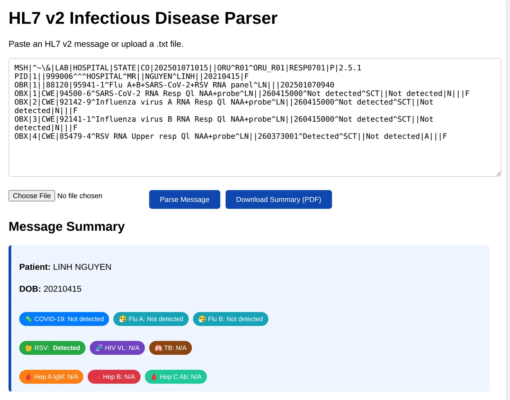
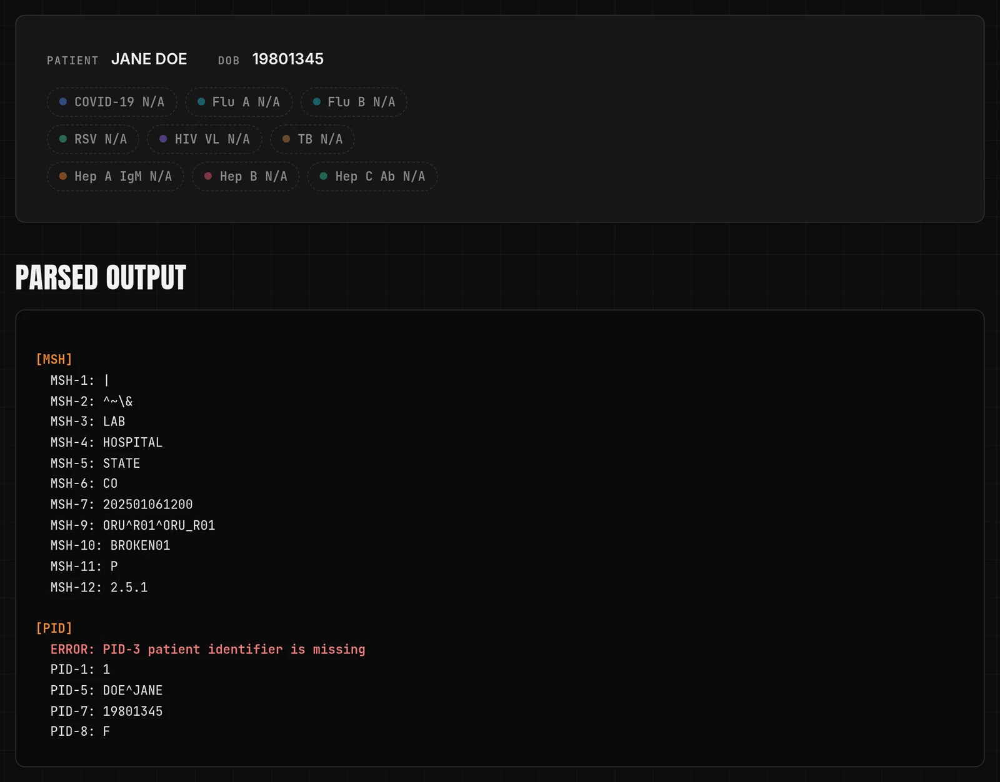
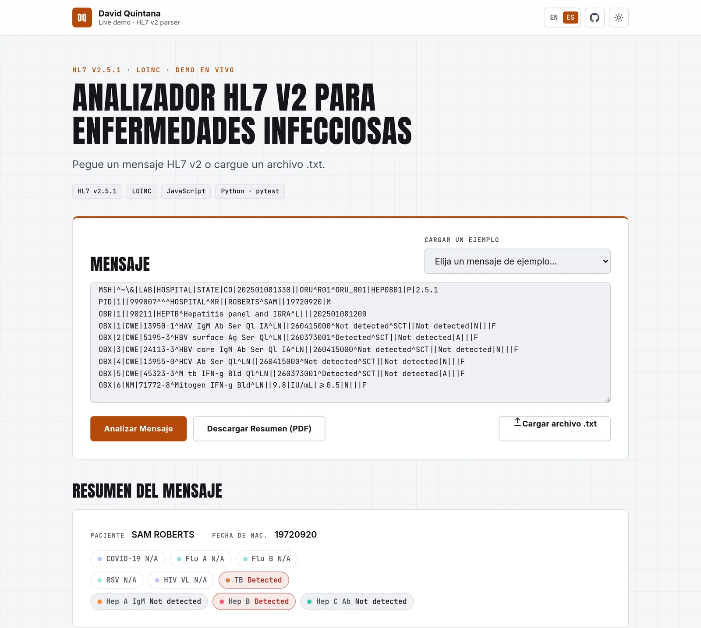

Case study · HL7 v2 · Public-health lab reporting
Caso · HL7 v2 · Reporte de laboratorio en salud pública
HL7 v2.x Infectious Disease Parser
Analizador HL7 v2.x de enfermedades infecciosas
Turns raw ORU^R01 lab messages into a validated, human-readable summary across nine infectious-disease categories — with a tested Python engine and a bilingual browser demo that apply the same rules.
Convierte mensajes de laboratorio ORU^R01 en un resumen validado y legible para nueve categorías de enfermedades infecciosas — con un motor en Python probado y una demo bilingüe que aplican las mismas reglas.
The problem
El problema
HL7 v2 is still the dominant standard for electronic lab reporting, yet a line like OBX|1|CWE|94500-6^SARS-CoV-2 RNA^LN||260373001^Detected^SCT is close to unreadable for non-technical staff. That creates four real risks:
- Unreadable data slows triage when every hour counts during an outbreak.
- A wrong LOINC mapping silently misclassifies a result and corrupts surveillance counts.
- Malformed messages (missing IDs, impossible dates, bad codes) either crash a parser or slip through unnoticed.
- Language barriers add cognitive load for Spanish-speaking staff reading English-only technical output.
HL7 v2 sigue siendo el estándar dominante para el reporte electrónico de laboratorio, pero una línea como OBX|1|CWE|94500-6^SARS-CoV-2 RNA^LN||260373001^Detected^SCT es casi ilegible para personal no técnico. Eso crea cuatro riesgos reales:
- Datos ilegibles retrasan el triaje cuando cada hora cuenta durante un brote.
- Un mapeo LOINC incorrecto clasifica mal un resultado sin avisar y corrompe los conteos de vigilancia.
- Mensajes mal formados (IDs faltantes, fechas imposibles, códigos inválidos) hacen fallar al analizador o pasan sin ser detectados.
- Las barreras de idioma añaden carga cognitiva al personal hispanohablante que lee resultados técnicos solo en inglés.
How it works
Cómo funciona

From pipes to a clinical summary
De barras verticales a un resumen clínico
Paste a message or upload a .txt file. The parser reads the delimiters each message declares in MSH-1/MSH-2, handles CR, LF, and CRLF line endings, and extracts the patient (PID) and every result (OBX).
Results map to nine categories — COVID-19, Influenza A, Influenza B, RSV, HIV-1 viral load, TB (IGRA), and Hepatitis A, B, and C — through one LOINC lookup. Coded answers keep their SNOMED CT code but display the text (Detected), and abnormal flags follow HL7 table 0078 (H, L, A, AA…), not just A.
Pega un mensaje o carga un archivo .txt. El analizador lee los delimitadores que cada mensaje declara en MSH-1/MSH-2, maneja finales de línea CR, LF y CRLF, y extrae al paciente (PID) y cada resultado (OBX).
Los resultados se asignan a nueve categorías — COVID-19, influenza A, influenza B, VSR, carga viral de VIH-1, TB (IGRA) y hepatitis A, B y C — con una sola búsqueda LOINC. Las respuestas codificadas conservan su código SNOMED CT pero muestran el texto (Detectado), y los indicadores anormales siguen la tabla HL7 0078 (H, L, A, AA…), no solo A.

Every defect, with its exact location
Cada defecto, con su ubicación exacta
Each record is built through a Pydantic v2 model. When a field fails, the error becomes an issue pointing at the HL7 location — PID-3, PID-7, OBX[2]-5 — instead of an exception.
- LOINC codes are checked for format and Mod-10 check digit
NMresults must be numeric; result status must be in HL7 table 0085- Impossible or future birth dates are rejected; ORU messages without PID or OBX are flagged
- A record with one bad optional field is salvaged, so a bad DOB doesn't throw away the patient
Cada registro se construye con un modelo Pydantic v2. Cuando un campo falla, el error se convierte en un hallazgo que apunta a la ubicación HL7 — PID-3, PID-7, OBX[2]-5 — en lugar de una excepción.
- Los códigos LOINC se verifican en formato y dígito de control Mod-10
- Los resultados
NMdeben ser numéricos; el estado debe estar en la tabla HL7 0085 - Se rechazan fechas de nacimiento imposibles o futuras; se marcan mensajes ORU sin PID u OBX
- Un registro con un campo opcional inválido se rescata, para que una fecha errónea no descarte al paciente

Bilingual, high-contrast, and safe to paste into
Bilingüe, de alto contraste y seguro para pegar
The interface switches between English and Spanish without a reload, and light and dark themes match the rest of this portfolio. Built-in sample messages load with one click. All message content is HTML-escaped before display, so a pasted message can never inject code into the page, and processing happens entirely in the browser.
La interfaz cambia entre inglés y español sin recargar, y los temas claro y oscuro coinciden con el resto de este portafolio. Los mensajes de ejemplo se cargan con un clic. Todo el contenido del mensaje se escapa antes de mostrarse, así que un mensaje pegado nunca puede inyectar código en la página, y el procesamiento ocurre por completo en el navegador.
Getting the codes right
Usar los códigos correctos
I verified every code against loinc.org and found three mapping errors in my own first version. A surveillance tool is only as good as its terminology.
Verifiqué cada código en loinc.org y encontré tres errores de mapeo en mi propia primera versión. Una herramienta de vigilancia es tan buena como su terminología.
| LOINC | MeasuresMide | Reported asSe reporta como | ChangeCambio |
|---|---|---|---|
94500-6 | SARS-CoV-2 RNA, NAA with probe | COVID-19 | |
92142-9 | Influenza A RNA, respiratory specimen | Influenza A | addedagregado |
76078-5 | Influenza A RNA, nasopharynx | Influenza A | fixed — was labeled RSVcorregido — figuraba como VSR |
92141-1 | Influenza B RNA, respiratory specimen | Influenza B | fixed — was used for Flu A and Bcorregido — se usaba para influenza A y B |
85479-4 | RSV RNA, upper respiratory specimen | RSV | addedagregado |
25836-8 | HIV-1 RNA viral load | HIV-1 | |
45323-3 · 64084-7 | M. tuberculosis IFN-γ (IGRA) | TB | |
71772-8 | Mitogen-stimulated IFN-γ | QC control — not reportedcontrol de calidad — no se reporta | fixed — was counted as a TB resultcorregido — se contaba como resultado de TB |
13950-1 · 5195-3 · 24113-3 · 13955-0 | HAV IgM · HBsAg · HBc IgM · HCV Ab | Hepatitis A / B / C |
Architecture
Arquitectura
The Python package separates the pipeline into three layers, each with its own tests:
- Ingestion — normalizes line endings, reads declared delimiters, resolves HL7 escape sequences, and splits batch feeds
- Validation — builds typed models and turns every problem into a located issue
- Transformation — one LOINC lookup per result, grouped by disease, keeping every result instead of overwriting earlier ones
A command-line tool prints a summary or JSON and exits non-zero when a message has errors, so it can sit in a data pipeline.
El paquete de Python separa el pipeline en tres capas, cada una con sus propias pruebas:
- Ingesta — normaliza finales de línea, lee los delimitadores declarados, resuelve secuencias de escape HL7 y divide lotes
- Validación — construye modelos tipados y convierte cada problema en un hallazgo con ubicación
- Transformación — una búsqueda LOINC por resultado, agrupada por enfermedad, conservando cada resultado en lugar de sobrescribir
Una herramienta de línea de comandos imprime un resumen o JSON y termina con error cuando un mensaje tiene problemas, para usarse dentro de un pipeline de datos.
from hl7_infectious import parse_message, Disease
report = parse_message(raw_hl7) # ingest → validate → summarize
report.latest(Disease.COVID19).value # "Detected"
report.has_errors # False
[i.location for i in report.issues] # e.g. ["PID-7", "OBX[2]-5"]
report.model_dump_json() # typed JSON for the next systemQuality & privacy
Calidad y privacidad
Tests cover line-ending variants, custom delimiters, Latin-1 input, batch envelopes, escape sequences, impossible dates, bad check digits, and JSON round-trips, and run against every sample file. All messages are synthetic; no real patient data is used anywhere in the project.
Las pruebas cubren variantes de fin de línea, delimitadores personalizados, texto Latin-1, lotes, secuencias de escape, fechas imposibles, dígitos de control inválidos y conversiones JSON, y se ejecutan contra cada archivo de ejemplo. Todos los mensajes son sintéticos; no se usa ningún dato real de pacientes.